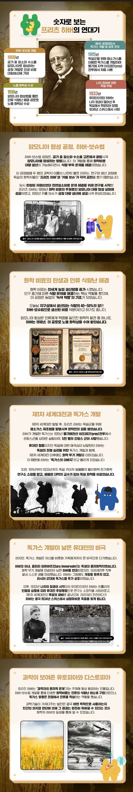

질소비료를 개발해서 인류를 기아에서 구했다는 아인슈타인급 업적이 있는데 독가스도 개발함 ㅋㅋ
독일에 충성했는데 정작 유대인이라고 팽당함 ㅋㅋ

질소비료를 개발해서 인류를 기아에서 구했다는 아인슈타인급 업적이 있는데 독가스도 개발함 ㅋㅋ
독일에 충성했는데 정작 유대인이라고 팽당함 ㅋㅋ
아니면 독가스 했더라도 어쨌든 전쟁 승리했다면
하버 vs 캐리어
개붕이들의 선택은?
100개 잘해도 1개 못한걸 더 기억하는게 사람이라 뭐
독가스야...쓴놈이 나쁜거지
쟤 하이드라 걔 아님?
보다였나? 과학자 분들 모여서 담소 나누는 유튜브에서는 프리츠 하버 악역처럼 보이는게 후대의 왜곡이라던데 자세히 아는 개붕이 있음?
뭐 실제론 상대국도 결국 다 독가스 개발했고 그저 국가에 봉사한것 뿐이라는 시각도 있지. 총기개발자들은 다 악마라고 하는 논리도 안맞잖아. 보통 이럴땐 시킨 나라에서 커버쳐줘야 되는데 시킨 나라도 유대인이란 이유로 외면 했으니
어머니 죽음을 목격한 장남은 장례식도 치르지 않고 전선으로 떠난 아버지랑 사이 존나 안좋다가 훗날 미국으로 이민 우울증으로 자살 - 그 딸(하버의 손녀)도 얼마 후 자살
두번째 아내에서 태어난 차남
경제사 및 화학 산업 역사학자로 활동
The Poisonous Cloud(독성 가득한 구름) 이란 책을 출간해서 아버지가 주도한 독가스 개발의 역사와 참상을 학술적으로 냉정하게 기록
막내딸
영국과 미국 등지로 이주하여 평범하게 삼 2015년 사망
(두번째 아내와도 나치에게 쫒겨나기 전 가부장적 태도와 갈등으로 이혼)
프린츠 하버의 친척들과 조카들
하버가 연구한 쥐나 벼룩을 잡는 살충제를 개량해 개발된 치클론B 독가스 등으로 인한 수용소 사망
프린츠 하버
뼛속까지 독일인이라고 믿었지만 나치정권 집권 후 연구소의 유대인 직원을 모두 해고하라고 명령받음 + "어차피 너도 유대인" 모욕 크리로 연구소장 사임후 망명
영국으로 잠깐 머물렀지만 주변 학자들은 독가스의 아버지와 같은 공간에서 실험하기도 꺼려하고 악수도 거부함
(하버의 독가스로 사망한 연합군 지인들이 많다보니)
유럽땅에 머물곳이 없어지자 유대인 지도자 하임 바이츠만(훗날 이스라엘 초대 대통령) 제안 받고 이스라엘로 가던 도중 스위스 허름한 호텔에서 심부전으로 사망
외관이 무다구치 렌야를 닮았다고 하는건 많이 실례가 될까요?
하버는 업적과 악행 모두 썰풀이용으로 과장된 면이 있음
하버가 질소비료 개발한건 대단한 일이지만,
질소비료 아이디어를 제안한 건 하버가 아니고
질소비료를 최초로 개발한 것도 하버가 아님
그리고 동시기에 질소비료를 개발하려고 뛰어들던 연구팀이 전세계에 많았음
질소비료를 어떤 방식으로 개발할지에 대한 아이디어가 이미 제시된 상태에서 하버는 가장 적절한 온도와 압력 환경 등을 처음으로 발견한 사람인 셈
독가스도 마찬가지로 하버가 처음 만든것도 아니고, 새로운 독가스 개발에 참여했을 뿐
근데 뭐 '인류를 구한 영웅이자 학살자' 라는 타이틀이 매력적이니까 후대에서 과장하는거지
언급 자주되지않나
독가스 안만들고 이후에 정치나 언플도 하고 그랬으면
평화상까지 2관왕도 가능했을거라 봄